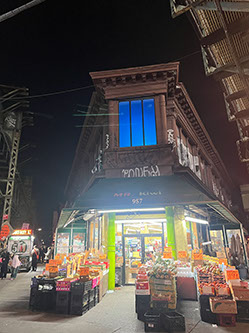
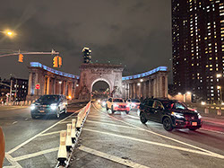
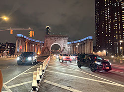
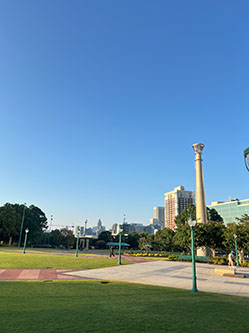
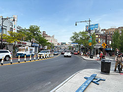
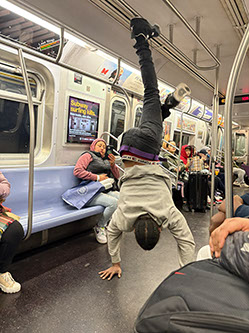
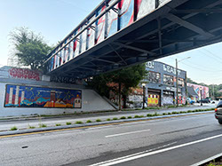

It stretches across quiet mornings and the hush after rain, letting happiness settle gently into the spaces it holds.
 
 Blue enjoys joy by noticing its subtleties—the hush of a smile, the soft echo of laughter, the way light bends and lingers.
 
Joy isn’t a storm for blue; it’s a tide that rises and falls, carrying calm and clarity, leaving traces of wonder in its wake.
